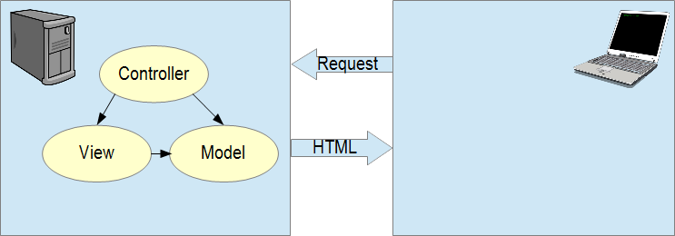
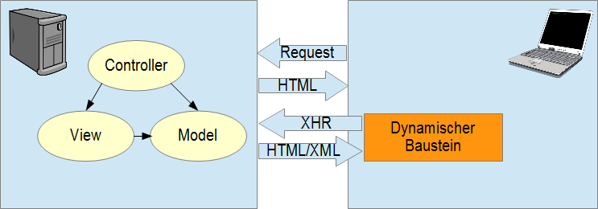
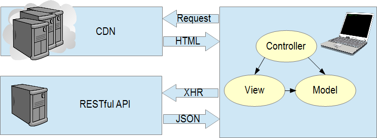

Client-Side-MV*
Ein Ueberblick
Von Benedikt Lang
Frueher: Server-Side-MV*
MVC serverseitig
Alle Komponenten und Logik auf dem Server
Server liefert statisches HTML
Dann kam XHR
MVC immernoch serverseitig
Endlich moeglich: Dynamisches Nachladen von Inhalten
Defacto Standard ab 2005
Heute: Client-Side-MV*
MVC (MVP, MVVM, MVWTF) im Browser
Thick Client, Server MVC wird zur REST Api, Skaliert besser (CDN, XHR), User Experience++
Grundlegender Aufbau
Model: Javascript Object(s) mit integrierter REST Funktionalitaet
View: Templateengine (immer unterschiedlich)
Controller: Meist ohne Framework Unterstuetzung, Glue zwischen Model und View.
Choose your Weapon

2009 | Google | OpenSource

"Angular is what HTML would have been had it been designed for applications."
- Angular.js Entwickler [...]

Angulars Hauptfeatures
- Erweiterte Templates: Databinding
- HTML Erweiterungen: Directives
Databinding: Two-Way


HTML Erweiterungen: Directives
Oberflaechlich: Eigene HTML Tags und Attribute
Im Hintergrund: Marker auf einem DOM Element, die Angulars HTML Compiler dann mit Logik versieht
Integrierte (ng-)Directives
Angular bringt eine Vielzahl von Directives mit (ng- Prefix)
- ng-repeat: Praktisches Foreach
- ng-click/ng-submit: Button onClick
- ng-src: Dynamische Bilder
- ng-if: Bedingungen
- ng-app, ng-controller: App/Ctrl Binding
- Viele Weitere...
In der Praxis
Eigene Directives
Attribute und Tags mit verschiedenen Scope Einstellungen
Directives in der Praxis
Kann Angular noch mehr?
- Dependency Injection
- ngResource: Anbindung an RESTful APIs
- DeepLinking/Routing
Wie anfangen?
Wie anfangen?
npm install -g yo
npm install -g generator-angular
yo angular
grunt serve

Entscheidungen!
Client-Side-MV* Ja/Nein?
Nahezu alle Varianten von Webseiten koennen profitieren
Bzgl SEO immernoch schwierig
Erheblicher Mehraufwand muss eingerechnet werden
Welches Framework?
Im Prinzip Geschmackssache, IMHO Angular fuer nahezu alle Projekte, Bootstrap wenn viel Flexibilitaet noetig
TodoMVC.com zum selbst ausprobieren
How?
Slides mit HTML/JS: github.com/hakimel/reveal.js
JS Fiddle fuer Slides: github.com/blang/quiddle.js
Slides online: git.io/RSaODg
Who?
Benedikt Lang | github.com/blang
THE END
Angular.js Playground
Quellen
- http://en.wikipedia.org/wiki/XMLHttpRequest
- https://plus.google.com/+AngularJS/posts/aZNVhj355G2
- https://github.com/yeoman/yeoman.io/tree/gh-pages/media